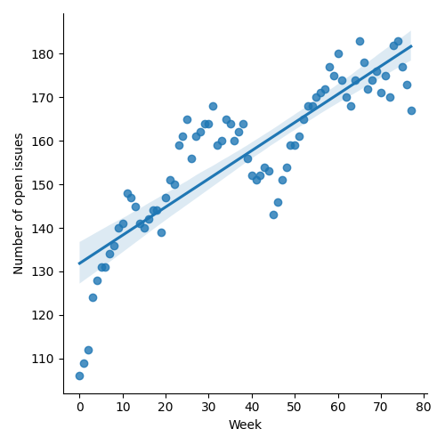
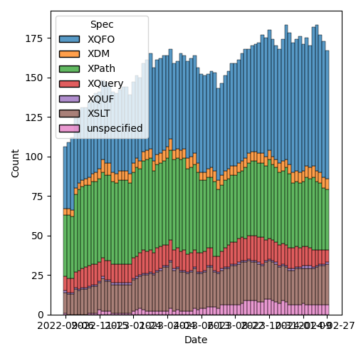
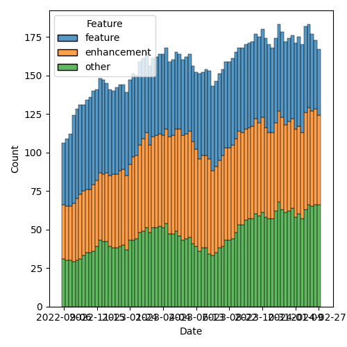

QT4 CG Meeting 068 Minutes 2024-03-05
Table of Contents
Meeting index / QT4CG.org / Dashboard / GH Issues / GH Pull Requests
Minutes
Approved at meeting 069 on 12 March 2024.
Summary of new and continuing actions [0/4]
[ ]QT4CG-052-02: NW to consider how to schedule an “editor’s meeting”[ ]QT4CG-063-04: NW to try to add test review to the editorial meeting.[ ]QT4CG-063-06: MK to consider refactoring the declare item type syntax to something like declare record[ ]QT4CG-064-08: NW to open an issue to try to resolve $search to $target consistently.
1. Administrivia
1.1. Roll call [11/13]
Regrets DN.
[X]Reece Dunn (RD)[X]Sasha Firsov (SF) [-:30][X]Christian Grün (CG)[X]Joel Kalvesmaki (JK)[X]Michael Kay (MK)[X]Juri Leino (JLO)[X]John Lumley (JLY)[ ]Dimitre Novatchev (DN)[X]Wendell Piez (WP)[X]Ed Porter (EP)[ ]Adam Retter (AR) [:10-][X]C. M. Sperberg-McQueen (MSM) [:10-][X]Norm Tovey-Walsh (NW). Scribe. Chair.
1.2. Accept the agenda
Proposal: Accept the agenda.
Accepted.
1.2.1. Status so far…

Figure 1: “Burn down” chart on open issues

Figure 2: Open issues by specification

Figure 3: Open issues by type
1.3. Approve minutes of the previous meeting
Proposal: Accept the minutes of the previous meeting.
Accepted.
1.4. Next meeting
The next meeting is scheduled for Tuesday, 12 March 2024.
Any regrets for the next meeting?
Beware that the US switches to daylight saving time before the next meeting.
1.5. Review of open action items [8/12]
[ ]QT4CG-052-02: NW to consider how to schedule an “editor’s meeting”[X]QT4CG-056-04: MK to write a proposal for adding a select attribute to xsl:text- This action can be tracked with issue #323
[X]QT4CG-058-02: MK to consider providing more advice about the pitfalls of mixing decimal and double when sorting- Discharged by raising issue #986
[X]QT4CG-063-01: MK to revise #956 especially with respect to the options parameter- PR is still marked “revise”, this action is no longer necessary
[X]QT4CG-063-02: JK to consider whether the roman numeral example is appropriate for the spec.- On consideration, no it probably wouldn’t be helpful
[ ]QT4CG-063-04: NW to try to add test review to the editorial meeting.[X]QT4CG-063-05: MK to revise PR #953 to take account of CG’s comments- Work ongoing, but this action has been overtaken by events
[ ]QT4CG-063-06: MK to consider refactoring the declare item type syntax to something like declare record[ ]QT4CG-064-08: NW to open an issue to try to resolve $search to $target consistently.[X]QT4CG-066-01: MK to add a note that the grammar rules for regular expressions apply after comments are removed[X]QT4CG-067-01: NW to ask the XML Prague organizers for hosting[X]QT4CG-067-02: MK to revert the changes to the test suite for EBV (PR 1003)
1.6. Review of open pull requests and issues
1.6.1. Blocked
1.6.2. Merge without discussion
The following PRs are editorial, small, or otherwise appeared to be uncontroversial when the agenda was prepared. The chairs propose that these can be merged without discussion. If you think discussion is necessary, please say so.
2. Technical Agenda
2.1. Review of blocked PRs
2.2. PR #1053: 1047 Default predicate for some#1 and every#1
See PR #1053
MK reviews the PR.
- MK: Because of function coercion,
fn:identitygets coerced and that made some of the prose incorrect. CG’s suggestion of usingboolean#1fixes that.
Proposal: accept this PR.
Accepted.
2.3. PR #1049: 340-partial fn:format-number: Specifying decimal format
See PR #1049
CG reviews the PR starting with the original issue.
- CG: The
fn:format-numberfunction works well for English numbers, but you have to add a decimal format to the prolog for German numbers.- … The intent is to make this simpler. The first step is the ability to include the decimal format inside the function (as a map).
- … The next step is to allow a user to specify the language.
- CG reviews the spec changes.
- CG: Is an implementation allowed to provide predefined decimal formats for languages?
- … Java already makes this easy.
- JLY: If that map contains an arbitrary value that isn’t meaningful, is that an error?
- CG: It should be. The same rules should apply that apply to the prolog.
- JK: I think this is a good improvement. Did you consider introducing an options map so that we can just add more things later?
- CG: No, but we could.
- JK: I remember think that there was something I wanted to add.
- MK: Related to that is the question of whether the option conventions apply: atomization, etc.
- JLO: Would it make sense for the name-format to be specified here, or should we reference some
other spec normatively. So, for example,
demeans the same thing across implementations. - CG: It’s an interesting question. But I think the existing rules are only recommendations.
- MK: Yes. Generally in XQuery, the static context is implementation defined.
But do we prescribe what “format=de” means?
- … I think we can’t because there are so many languages.
- RD: I was going to suggest referencing the Unicode Common Locale Data
Repository (CLDR) that has recommendations for all of the languages in
Unicode and some variants.
- … That’s where libraries like Java and ICU get their data from.
- … We can say that implementations should use the common locale registry.
- … We could go further and say that “-” corresponds to the character with the “minus” property in CLDR.
- JLO: That was my idea too.
- MK: Traditionally the default for minus has been hyphen, but it’s probably better to use the Unicode “minus” character. That’s a technical decision.
- RD: Using the CLDR, it’s all standardized in libraries.
- MK: But it’s not good at decisions like that which are at least partly typographic.
- CG: You can still override all of the choices.
- JLY: What happens when you try round-tripping one of these?
- MK: In general it fails.
- CG: You need to extend parse integer.
- NW: I found
$format-nameand$formatconfusing. - MK: I tripped over the same thing in the paragraphs.
- NW: CG’s original question was, can you define “de” to mean something specific.
- MK: Yes, I think you can. At least in XQuery, probably not in XSLT.
Proposal: accept this PR.
Accepted. (CG to merge after one editorial change.)
2.4. PR #1027: 150 fn:ranks
See PR #1027
Defer until DN is available.
2.5. PR #832: 77 Add map:deep-update and array:deep-update
See PR #832
MK introduces the discussion.
- MK: I think this is now a fairly complete and viable spec; but I don’t really
expect it to be accepted without discussion of alternatives.
- … It’s XQuery only which is one of the things we might like to discuss.
- … We start in 4.14.5 Update Expressions. I’ve replaced HoF with custom syntax.
- … The only reason we have
maporarraythere is to disambiguate the grammar.
MK walks through the prose of the spec.
- MK: It turns out that the syntax is fairly intuitive but the underlying semantics are horrendous!
- … You have to make a small pipeline if you’re making multiple updates; does that need more semantics to make it easier?
MK walks through the rather hairy semantics.
- MK: There’s an open question about whether the new values still has the labels; it probably shouldn’t.
- RD: In previous version of XQuery, there was the update facility extension module. That was separate from the core specification. That defines things like insert/delete/replace/rename, etc. on nodes. My question is, is this syntax the remit of that specification, or if we’re adding this into the core, does that mean it would make sense to incorporate modification on nodes as well.
- MK: All good questions. The first thing to point out is that XQuery Update has
an enormous amount of machinery in place to make sure the updates can’t be
seen while they’re in progress, except for the copy-modify expression.
- … If anything, this is similar to the copy-modify expression but it doesn’t use anything like the pending update lists.
- … It doesn’t have the problems of node identity or functional purity.
- … What is certainly true is that you could do something similar to this for nodes as well. But it’s harder because of node identity; you pretty much have to copy the whole subtree when you change a node.
- … Not having identity makes it harder to specify; it uses the labeling feature to assign transient ids.
- … But, yes, it could be extended.
- RD: What’s the overlap and syntax confusion going to be like?
- MK: Another thing to consider is that it’s operating on a much simpler data model.
- JLY: The verification step is to check that you’re inside the map or array that you’re dealing with. It strikes me that you can determine that statically.
- MK: Yes. But not always. And it’s easy to do by mistake. I decided rather than trying to restrict the syntax of the expression, it was better to validate the result.
- CG: Thank you. It’s a comprehensive proposal. I haven’t checked the semantics
but we do use XQuery Update in most of our complicated projects. We have
noticed that there are sequences of updates. We should definitely try to find
a syntax that allows you to do more than one operation gracefully.
- … I made one proposal for a possible syntax. We could also think about using the same syntax as XQuery Update. I think it would be fairly complex to define XQuery Update again for the core specification.
- MK: There’s all the complexity of validation and namespaces; it’s operating in a much more complicated world.
- CG: It would be nice to find a unified syntax.
- JLO: For me, that syntax is very close to what I see in code that updates or
modifies XML. But this is a different thing.
- … So why don’t we have an insert here?
- MK: That really is entirely a question of trying to eat the elephant in bite sized chunks. Produce something that’s useful but minimal first. If we can make the semantics work, we can grow from there.
- RD: Building on this discussion, i wonder if it makes sense to keep the XQuery
Update syntax but then for the core XQuery specification, don’t worry about
the update lists or any of those things.
- … And then only limit it to maps and arrays. We know we can do those without that complex machinery.
- MK: I was reluctant to use the copy-modify verb because people need to realize this doesn’t involve a wholesale copy. Conceptually it’s a copy but there’s no identity so that’s trivial.
- RD: With things like the replace, delete, insert rename syntax in XQuery
Update. Ideally, we would have the same general syntax but instead of saying
nodeornodes, you’d saymaporarray. The update facility syntax would then define the extensions for nodes.- … The advantage of that is that we won’t have yet another syntax for doing the same sort of thing.
- MK: I’ll look at whether the syntax can be aligned; but I’m reluctant to take on something too large and complicated.
- RD: BaseX has an update syntax similar to this.
- CG: Yes.
- RD: I wonder if we could align or standardize along those lines.
- … The replace expression is standalone so you could maybe leverage that.
- CG: MK, could you please open the pull request for #832.
- … I made a suggestion for how to attempt to unify the syntax.
- … Being able to bind intermediate results to variables can be helpful.
3. Any other business
- NW: Should I make the highlighting colors a little different?
Some general agreement that it might be nice.
- JLO: The update extension in eXist DB seems to be very similar.